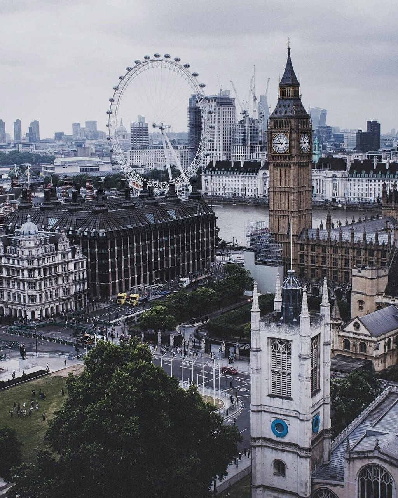

At this page you can find trips that will change your life forever
After this trip, your life will be changed. It's impossible to not be affected by seeing animals in the wild and by the whole Kenyan landscape. Definitely, your kids they will for sure experience life on earth in a really engaging way.
The Alley of Baobab is a group of trees filling the dirt road in Western Madagascar. The trees are about 30m high, and the locals of Madagascar say that this tree is sacred.
Bayon is a Buddhist Temple, it is also known as the two sets of bas-relief. It is also one of the most famous temples around the world, and millions of tourists come each year to see it.

In London is the smallest city in England, but there is always something to do and see in the city. London has some of the best art, shopping, dining, history, and entertainment,so it is impossible to be bored in London. You can experience walking and buying in the Soho street markets, you can also see the magic of the West-End and the mandatory trip to Harrods. 
Borneo is the third largest island in the world! There are thousands of snorkeling spots for you to go an enjoy with your family or partner. There are thousands of tropical islands to visit. This page identifies the best things to do in Borneo for jungles, mountain climbing, and scuba diving.